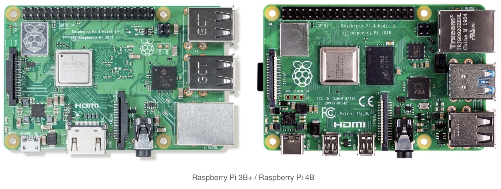

Programming, robotics, traveling
Видеозахват на Raspberry Pi. Часть 1: Hardware
Навигация по серии статей:
Во многих прикладных задачах возникает необходимость работы с видеопотоками на одноплатных компьютерах (single board computer – SBC).
Для себя ставлю задачу изложить в этой статье накопленные теоретико-практические знания по организации работы с видеопотоками на SBC:
- Работа с видеопотоками средствами процессора и графического со-процессора (кодирование / декодирование видео);
- Основные принципы и программное обеспечение для организации стриминга видео;
- Узкие аппаратные места некоторых SBC.
Теория
Для изложения я буду описывать процесс на примере самых распространных SBC на 2020 год. Это одноплатные компьютеры Raspberry Pi 3го и 4го поколения. Однако материал изложенный в этой статье применим и для других SBC.

Еще пару хороших ссылочек на обзор плат от Кравченко Виктора:
Для начала предлагаю рассмотреть устройство плат и задаться вопросами: «откуда берется видеопоток?», «как он передается?», «где обрабатывается?» и «где хранится?».


Источник видеопотока
-
Видеопоток снимаемый по шине USB (например, плата видео-захвата LinuxTV EasyCAP, веб-камера);
В этом варианте нужно иметь ввиду, что
v4l2драйвер Raspberry Pi не позволит работать более чем с одним устройством единовременно. -
Видеопоток передаваемый по сети (например видео-поток с IP-камеры, передаваемый по протоколу
RTSP). -
Видео-поток генерируемый из файла находящимся на блочном USB устройстве или на внешнем сервере в сети.
-
Устройство подключенное к шине Camera serial interface (CSI): обычно это Raspicam, однако в этот порт можно подключить HDMI-конвертор; Некоторые ссылочки по CSI:
- Работа с CSI – ekzorchik.ru
- Распиновка портов - pcminipro.ru
- Использование I2C из CSI – digitrode.ru
- https://www.mipi.org/specifications/dsi
- https://ru.wikipedia.org/wiki/Display_Serial_Interface
- Opensource camera stack at Raspberry Pi 4 raspberrypi.org/blog, libcamera.org
HDMI->CSI конвертор
Большинство таких решений построено на базе чипа Toshiba TC358743XBG (Datasheet).
- CSI-2 / Toshiba TC358743XBG
- Lusya HDMI-совместимая плата адаптера стандартный интерфейс к CSI-2 TC358743XBG для Raspberry Pi (aliexpress)
- Compile raspberry pi 3 kernel to add drivers (tc358743)
- Захват видео через HDMI вход HDMI-CSI моста для Raspberry Pi
- B100 HDMI to CSI-2 Bridge
- Захват видеопотока через HDMI на Raspberry
- Raspberry Pi HDMI input board allows HD recording from almost any device
Кстати по теме, прикольный проект
pikvm- позволяет аппаратно подключиться к серверу и предоставить доступ к его монитору, клавиатуре доступ.
{kind=link}
Узкая шина
Далее видеопоток необходимо передать. На диаграмме для Raspberry Pi 3 gen можно выделить 2 основных узких места:
CSI шинамеждуRaspberry Piивнешним устройством– 2Gbit/s (250MBytes/s);USB 2.0 шинамеждуUSB/LAN-контроллеромипроцессором– 480Mbit/s (60MByte/s);- Raspberry Pi 3B: Ethernet 100Mbit/s, USB до 480Mbit/s (380Mbit/s одновременно с полной загрузкой Ethernet)
- Raspberry Pi 3B+: Ethernet 365Mbit/s, USB до 480Mbit/s (135Mbit/s одновременно с полной загрузкой Ethernet)
Здесь нужно разделять: Ethernet / Wi-Fi, тк они подключены к процессору по разным шинам.
Обработка видеопотока
После того как мы завели в устройство видео-поток, его необходимо обработать. Обычно основную часть обработки, если мы работаем с камерами, занимает кодирование (операция упаковки (сжатия) видео в некий контейнер, например mjpeg, H.264, H.265).
Некоторые USB-камеры умеют кодировать видеопоток на встроенном контроллере.
В основном эти операции делаются средствами CPU, однако контроллер Raspberry Pi в своем составе имеет GPU co-processor, который может выполнить некоторые операции по кодированию и декодированию (при этом не отнимая вычислительное время у CPU).
Нужно понимать, что CPU – достаточно универсальная штука, однако её ресурс ограничен, и если можно переложить часть задач на GPU – это высвободит процессорное время для других задач.
Здесь есть пара ограничений:
- Аппаратное ограничение CPU.
- Аппаратное органичение GPU, набор поддерживаемых алгоритмов.
- Raspberry Pi 3B
- Broadcom BCM2837, Quad core Cortex-A53 (ARMv8) 64-bit SoC @ 1.2GHz
- Video Core IV® Multimedia
- Raspberry Pi 3B+
- Broadcom BCM2837B0, Quad core Cortex-A53 (ARMv8) 64-bit SoC @ 1.4GHz
- Video Core IV® Multimedia
- Raspberry Pi 4B
- Broadcom BCM2711, Quad core Cortex-A72 (ARMv8) 64-bit SoC @ 1.5GHz
- Video Core VI® Multimedia
- H.265 (4kp60 decode), H264 (1080p60 decode, 1080p30 encode)
- OpenGL ES 3.0 graphics
Тут нужно пояснить, что Video Core и есть GPU co-processor встроенный в Broadcom чип, подробднее на wiki и доп. ссылочки:
- Broadcom открыл драйвер, прошивку и полную документацию для видеоускорителя VideoCore IV
- Pi 4 - full specification of VideoCore 6
- github.com/hermanhermitage
- py-videocore6 — библиотека Python для GPGPU на Raspberry Pi 4 с графическим процессором VideoCore 6
- github.com/Idein
- github.com/nineties
- VideoCore® IV 3D Architecture Reference Guide
- V4L encoding using Broadcom VideoCore IV
- gitlab.com/raspivideo
Отдача видеопотока
Затем необходимо либо отдать видеопоток, либо сохранить его в файл, сделать это мы можем следующими способами:
- Отдать видеопоток по сети:
Ethernet/Wi-Fi; - Отобразить используя
HDMI,AV,DSIвыходRaspberry Pi; - Сохранить в файл на блочное
USB-устройство; - Сохранить в файл на
microSDкарту.
Тут главное понять с какой скоростью потребитель может принять эту информацию, например какая скорость записи на флешкарте или внешнем носителе.
Количество информации
Думаю после вводной теории будет правильным поговорить о количестве информации.
На практике зачастую используют видеокамеры со встроенными кодеками которые обеспечивают сжатие передаваемых данных. Однако наравне с этим для некоторых задач взаимодействие происходит с несжатыми данными.
Например, при обработке видеопотока на процессоре с применением технологии так называемого “техничекого зрения”, чтобы не раскодировать на процессоре обратно сжатый видеопоток, можно сразу работать с несжатым.
Давайте рассмотрим какое количество информации будет передавать некая камера в несжатом формате (не путать с RAW) в FullHD разрешении (1920x1080 пикселей).
Если для примера взять распространненую RGB модель кодирования, состоящую из 3-х основных цветов: красного, зеленого, синего, каждый из которых в свою очередь имеет по 256 оттенков, то можно посчитать: 1 цвет из 256 оттенков = 8 бит = 1 байт.
Учитывая, что RGB модель имеет 3 цвета (по 256 оттенков каждый), получаем, что для кодирования одного пикселя используется 3 байта.
Получается – один FullHD фрейм весит: 1920[px] x 1080[px] x 3[byte] = 6,220,800[byte] ≈ 6MByte
Тут нужно сделать ремарку, что не везде используется
RGBкодирование, чаще с камер снимаетсяYUV, подробнее в этой статье «Захват и сырой формат аудио/видео: микроликбез».
Эта модель кодирования занимает в два раза меньше информации по сравнению с RGB моделью.
Далее я буду оперировать данными для кодирования вRGB. Поделив это напополам, вы получите данные дляYUVкодирования.
Для удобства сравнения следующие данные представлю в bit/s (это в 8 раз меньше, чем byte/s): 6[MByte/s] = 49,7[Mbit/s] ≈ 50[Mbit/s]

Mini-вывод
Думаю после сравнения цифр стало ясно, что Raspberry Pi 3 не сможет банально принять FullHD картинку 60 кадров / сек в несжатом виде. Максимальное, что можно выжать из этого SBC – это подключить Raspicam к CSI порту и снять FullHD, 40 кадров / сек.
Ситуация с Raspberry Pi 4B иная, ввиду наличия PCI Express шины пропускной способностью в 5Gbit/s и подключенного к ней контроллера USB 3.0. Теоретически с Raspbbery Pi 4B можно снять FullHD, 60 кадров / сек с одного порта, + со второго ещё FullHD, 40 кадров / сек. Оговорюсь, что это только теоретические цифры, на практике скорости будут несколько меньше.
Вообще возможности
BCM2711используемого в Rasbperry Pi 4 больше, однако не все реализованы на плате, подробнее на raspberrypi.org.
Думаю теперь подобный расчет вы сможете сделать сами для вашего формата данных, разрешения, частоты и способа подключения камеры к компьютеру.
В этой статье были рассмотрены аппаратные характеристики и ограничения при работе с несжатым видеопотоком. В дополнение написана вторая статья про софт для видеозахвата на Raspberry Pi.